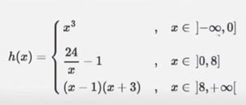

Exercício
Dificuldade
Pontos
Data limite
Créditos
Ficha07_012
Normal
4.0
26/09/2022 16:12:00
(c)M@nso 2021
Fórmula por ramos III
Implemente a função h. O valor de x deve ser introduzido pelo utilizador

Input
Output
-1
x : -1.0 f(-1.0)= -1.0
0
x : 0.0 f(0.0)= 0.0
4
x : 4.0 f(4.0)= 5.0
8
x : 8.0 f(8.0)= 2.0
10
x : 10.0 f(10.0)= 117.0
3.568
x : 3.568 f(3.568)= 5.726457399103139
0.724
x : 0.724 f(0.724)= 32.149171270718234
4.986
x : 4.986 f(4.986)= 3.8134777376654636
-2.402
x : -2.402 f(-2.402)= -13.858588808000002
-0.928
x : -0.928 f(-0.928)= -0.7991787520000001
Algorithmi 22.05 Student version (c) Antonio M@nso 2022 Instituto Politécnico de Tomar - All rights reserved